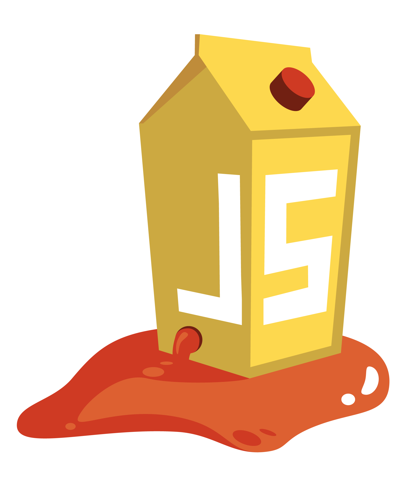

<!doctype html>
<html class="theme-5">
<meta charset="utf-8" />
<link href="../html-slideshow.bundle.min.css" rel="stylesheet" />
<link href="../style.css" rel="stylesheet" />
<script src="https://dbwebb.se/cdn/js/html-slideshow_v1.1.0.bundle.min.js"></script>

<title>Web application security</title>

<script data-role="slide" type="text/html" data-markdown class="titlepage center">
# Web application security
## OWASP Top Ten
### Mikael Roos
</script>


<script data-role="slide" type="text/html" data-markdown>
# Agenda

* Web application security
* OWASP Top Ten
* Example on attacks

</script>


<script data-role="slide" type="text/html" data-markdown class="titlepage center">
# OWASP
</script>


<script data-role="slide" data-markdown type="text/html">
# OWASP

* The Open Web Application Security Project
* Nonprofit
* To improve security of software
* Tools, resources, community, networking, education, training

<p class="footnote">https://owasp.org/</p>

</script>


<script data-role="slide" data-markdown type="text/html">
# OWASP Top Ten

> The OWASP Top 10 is a standard awareness document for developers and web application security.

> It represents a broad consensus about the most critical security risks to web applications.

<p class="footnote">https://owasp.org/www-project-top-ten/</p>

</script>


<script data-role="slide" data-markdown type="text/html">
# OWASP Top Ten 2021

1. Broken Access Control
2. Cryptographic Failures
3. Injection
4. Insecure Design
5. Security Misconfiguration
6. Vulnerable and Outdated Components
7. Identification and Authentication Failures
8. Software and Data Integrity Failures
9. Security Logging and Monitoring Failures
10. Server-Side Request Forgery

</script>


<script data-role="slide" data-markdown type="text/html">
# 1 - Broken Access Control

> Access control enforces policy such that users cannot act outside of their intended permissions.

> Failures typically lead to unauthorized information disclosure, modification, or destruction of all data or performing a business function outside the user's limits. 

<p class="footnote">https://owasp.org/Top10/A01_2021-Broken_Access_Control/</p>

</script>


<script data-role="slide" data-markdown type="text/html">
# 2 - Cryptographic Failures

> The first thing is to determine the protection needs of data in transit and at rest.

> For example, passwords, credit card numbers, health records, personal information, and business secrets require extra protection.

> Is the data under GDPR or other regulations on how to protect senetive data?

<p class="footnote">https://owasp.org/Top10/A02_2021-Cryptographic_Failures/</p>

</script>


<script data-role="slide" data-markdown type="text/html">
# 3 - Injection

> The concept is identical among all interpreters. Source code review is the best method of detecting if applications are vulnerable to injections.

> Some of the more common injections are SQL, NoSQL, OS command, Object Relational Mapping (ORM), LDAP.

> User-supplied data is not validated, filtered, or sanitized by the application.

> Hostile data is directly used or concatenated. The SQL or command contains the structure and malicious data in dynamic queries, commands, or stored procedures.

<p class="footnote">https://owasp.org/Top10/A03_2021-Injection/</p>

</script>


<script data-role="slide" data-markdown type="text/html">
# 4 - Insecure Design

> Insecure design is a broad category representing different weaknesses, expressed as “missing or ineffective control design”.

> There is a difference between insecure design and insecure implementation. We differentiate between design flaws and implementation defects for a reason, they have different root causes and remediation.

<p class="footnote">https://owasp.org/Top10/A04_2021-Insecure_Design/</p>

</script>


<script data-role="slide" data-markdown type="text/html">
# 5 - Security Misconfiguration

> Missing appropriate security hardening across any part of the application stack or improperly configured permissions on cloud services.

> Default accounts and their passwords are still enabled and unchanged.

> For upgraded systems, the latest security features are disabled or not configured securely.

<p class="footnote">https://owasp.org/Top10/A05_2021-Security_Misconfiguration/</p>

</script>


<script data-role="slide" data-markdown type="text/html">
# 6 - Vulnerable and Outdated Components

> Remove unused dependencies, unnecessary features, components, files, and documentation.

> Continuously inventory the versions of both client-side and server-side components (e.g., frameworks, libraries) and their dependencies.

<p class="footnote">https://owasp.org/Top10/A06_2021-Vulnerable_and_Outdated_Components/</p>

</script>


<script data-role="slide" data-markdown type="text/html">
# 7 - Identification and Authentication Failures

> Confirmation of the user's identity, authentication, and session management is critical to protect against authentication-related attacks.

> Where possible, implement multi-factor authentication to prevent automated credential stuffing, brute force, and stolen credential reuse attacks.

<p class="footnote">https://owasp.org/Top10/A07_2021-Identification_and_Authentication_Failures/</p>

</script>


<script data-role="slide" data-markdown type="text/html">
# 8 - Software and Data Integrity Failures

> Software and data integrity failures relate to code and infrastructure that does not protect against integrity violations.

> An example of this is where an application relies upon plugins, libraries, or modules from untrusted sources, repositories, and content delivery networks (CDNs).

<p class="footnote">https://owasp.org/Top10/A08_2021-Software_and_Data_Integrity_Failures/</p>

</script>


<script data-role="slide" data-markdown type="text/html">
# 9 - Security Logging and Monitoring Failures

> To help detect, escalate, and respond to active breaches.

> Without logging and monitoring, breaches cannot be detected.

<p class="footnote">https://owasp.org/Top10/A09_2021-Security_Logging_and_Monitoring_Failures/</p>

</script>


<script data-role="slide" data-markdown type="text/html">
# 10 - Server-Side Request Forgery (SSRF)

> SSRF flaws occur whenever a web application is fetching a remote resource without validating the user-supplied URL.

> An attacker to coerce the application to send a crafted request to an unexpected destination.

> The incidence of SSRF is increasing, the severity of SSRF is becoming higher due to cloud services and the complexity of architectures.

<p class="footnote">https://owasp.org/Top10/A10_2021-Server-Side_Request_Forgery_%28SSRF%29/</p>

</script>


<script data-role="slide" type="text/html" data-markdown class="center full">
<figure>

</figure>
</script>


<script data-role="slide" data-markdown type="text/html">
# CWE

* Common Weakness Enumeration
* Community-developed list of software and hardware weakness types
* A common language, a measuring stick for security tools
* Baseline for weakness identification, mitigation, and prevention efforts
* OWASP depends on CWE

<p class="footnote">https://cwe.mitre.org/</p>

</script>


<script data-role="slide" type="text/html" data-markdown>
# CWE data sources

* Compiled from many sources, formula was applied to the data to score each weakness based on prevalence and severity

* Common Vulnerabilities and Exposures (CVE®)
* National Vulnerability Database (NVD)
* Common Vulnerability Scoring System (CVSS)
* Known Exploited Vulnerabilities (KEV) Catalog

</script>


<script data-role="slide" data-markdown type="text/html">
# CWE Top 25

* 2022 CWE Top 25 Most Dangerous Software Weaknesses
* Demonstrates the currently most common and impactful software weaknesses
* A practical and convenient resource to help mitigate risk

<p class="footnote">https://cwe.mitre.org/top25/archive/2022/2022_cwe_top25.html</p>

</script>


<script data-role="slide" type="text/html" data-markdown>
# CWE Top 25 (2022)

A selection of the top 25.

* CWE-79 - Cross-site Scripting
* CWE-89 - SQL Injection
* CWE-20 - Improper Input Validation
* CWE-352 - Cross-Site Request Forgery (CSRF)
* CWE-434 - Unrestricted Upload of File with Dangerous Type
* CWE-502 - Deserialization of Untrusted Data

</script>


<script data-role="slide" type="text/html" data-markdown>
# CWE Top 25 (2022)...

* CWE-287 - Improper Authentication
* CWE-798 - Use of Hard-coded Credentials
* CWE-862 - Missing Authorization
* CWE-306 - Missing Authentication for Critical Function
* CWE-918 - Server-Side Request Forgery (SSRF)
* CWE-94 - Code Injection

</script>


<script data-role="slide" data-markdown type="text/html">
# CVE

* Common Vulnerabilities and Exposures
* International cybersecurity community effort
* List of entries for publicly known cybersecurity vulnerabilities
* Each containing an identification number, a
description, and at least one public reference

<p class="footnote">https://www.cve.org/</p>

</script>


<script data-role="slide" data-markdown type="text/html">
# OWASP, CWE, CVE

* [A03:2021 - Injection](https://owasp.org/Top10/A03_2021-Injection/)
    * [OWASP SQL Injection](https://owasp.org/www-community/attacks/SQL_Injection)
* [CWE-89: SQL Injection](https://cwe.mitre.org/data/definitions/89.html)
* [CVE-2020-9402](https://cve.mitre.org/cgi-bin/cvename.cgi?name=CVE-2020-9402)

</script>


<script data-role="slide" type="text/html" data-markdown class="titlepage center">
# Example
## Security Misconfiguration
</script>


<script data-role="slide" data-markdown type="text/html">
# Security Misconfiguration

Attackers will often attempt to exploit unpatched flaws or access default accounts, unused pages, unprotected files and directories, etc to gain unauthorized access or knowledge of the system.

</script>


<script data-role="slide" type="text/html" data-markdown class="center full">
<figure>

</figure>
</script>


<script data-role="slide" type="text/html" data-markdown class="titlepage center">
# Example
## SQL Injection
</script>


<script data-role="slide" data-markdown type="text/html">
# Injection

Almost any source of data can be an injection vector, environment variables, parameters, external and internal web services, and all types of users. Injection flaws occur when an attacker can send hostile data to an interpreter.

</script>


<script data-role="slide" data-markdown type="text/html" class="center">
# Exploits of a Mum
<figure>
    
    <figcaption>https://xkcd.com/327/</figcaption>
</figure>
</script>


<script data-role="slide" data-markdown type="text/html">
# Code sample Bobby tables

```
firstname = "Robert"
firstname = "Robert'; DROP TABLE student; --"
```

```
sql = """
    SELECT lastname, grade, program
    FROM student
    WHERE firstname =
"""
firstname = input("Search for: ")
sql = sql + "'" + firstname + "'"
cursor.execute(sql)
```

</script>


<script data-role="slide" data-markdown type="text/html">
# How to solve?

* Privileges
* Never trust user input
* Escape user input
* Avoid string concatenation
* Prepared statement

```
WHERE firstname = ?
```

</script>


<!-- Add CSS injection, to show it off -->
<!-- What are the general ways to secure a express application? -->


<script data-role="slide" type="text/html" data-markdown>
# How to protect

* Rule 1: Never trust external or incoming data

</script>


<script data-role="slide" type="text/html" data-markdown>
# Learn more



* OWASP Juice Shop

> Probably the most modern and sophisticated insecure web application!

> It can be used in security trainings, awareness demos, CTFs and as a guinea pig for security tools!

<p class="footnote" style="clear: both">https://owasp.org/www-project-juice-shop/</p>

</script>


<script data-role="slide" type="text/html" data-markdown class="center full">
<figure>

</figure>
</script>


<script data-role="slide" type="text/html" data-markdown class="center full">
<figure>

</figure>
</script>


<script data-role="slide" type="text/html" data-markdown>
# Play Juice Shop

```
docker run --rm -p 3000:3000 bkimminich/juice-shop
```

</script>


<script data-role="slide" type="text/html" data-markdown>
# Summary

* OWASP
    * OWASP Top Ten
* CWE Common Weakness Enumeration
    * CWE Top 25
* CVE Common Vulnerabilities and Exposures

</script>


<script data-role="slide" type="text/html" data-markdown class="titlepage center">
# The end
</script>


<script data-role="slide" type="text/html" data-markdown>
</script>

</html>
